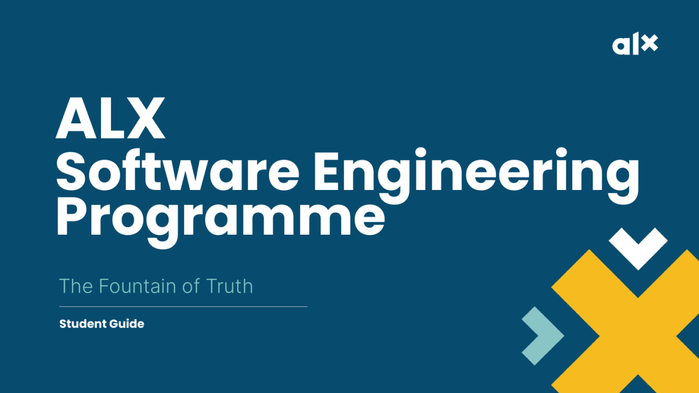

DevOps & Cloud Infrastructure
System Engineering & Cloud Automation Fleet
A comprehensive infrastructure automation codebase written for Linux server clusters. Focuses on zero-downtime Nginx load balancing, automated SSL certificate issuance via Let's Encrypt, firewall hardening (UFW), and automated logging/monitoring scripts.
- Automated Bash orchestration for rapid server provisioning and package management
- High-availability round-robin load balancer setup with health check triggers
- Hardened SSH access, security audit scripts, and automated daily backups